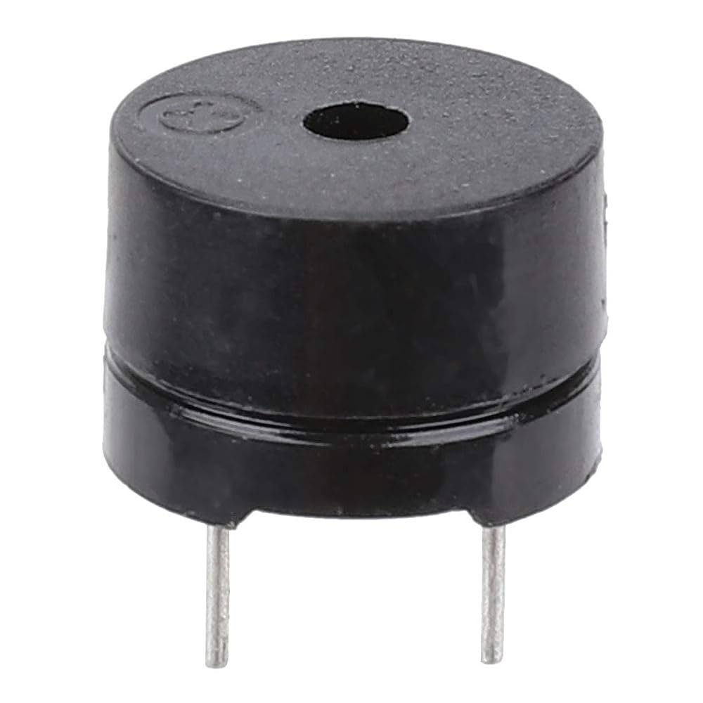

Qu'est ce qu'un Buzzer en tant que composant ?

1. Quand et par qui a t-il été inventé ?
Le buzzer a été inventé en 1831 par Joseph Henry, le buzzer a été utilisé à la base pour les premières sonnettes, son fonctionement était possible grâce à l'électromagnétisme.
2. Les différents types de buzzers